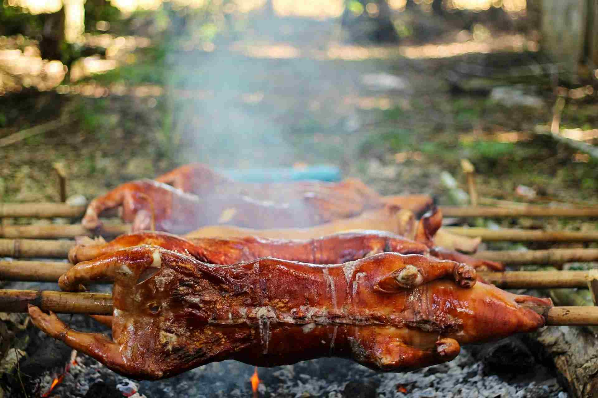

The short answer to where to eat lechon in Cebu is that it depends on how you plan to spend the day. House of Lechon suits a long table of friends or family, CnT Lechon is the no-fuss classic, Rico's Lechon lets you compare an original and a spicy version, Ayer's and Zubuchon slot easily into a sightseeing route, and Tatang's in Apas is the one to try if you prefer boneless belly. Branches, menus and hours change, so this guide points you to streets and areas and leaves the final check to a quick call or a look at each restaurant's own page.
The reputation of Cebu lechon rests on the pork itself. The pig is typically roasted with aromatics packed inside, so the meat arrives already seasoned and the skin comes out crackling. That is why the sensible way to judge any place is to taste a piece plain before you reach for sauce. If the meat and skin carry the bite, you have found a good one.
None of the six stops below is ranked above the others. They are grouped by the kind of meal you want, because a good lechon stop for a family of eight is not the same as a good one squeezed between two attractions. Where an address is a single branch, it is the one named here, and other outlets may exist.

For a Proper Sit-Down Meal
House of Lechon, Acacia Street
House of Lechon sits on Acacia Street near the corner of Tojong Street in Cebu City, and it is built for sharing. There is indoor and outdoor seating, and the menu goes beyond roast pork into other Filipino dishes, which helps when not everyone at the table wants the same thing. Order the lechon for the middle of the table, then add rice and one or two other dishes instead of a pile of mains.
A large group should ask the staff about portion sizes before committing, since lechon goes a long way once it is shared. Call ahead for opening hours and table availability, especially if you are bringing more than a handful of people.
For the Classic Lechon Stops
CnT Lechon, Guadalupe
CnT Lechon is one of the established names tied to Cebu lechon, and its Guadalupe branch is on V. Rama Avenue. It fits a meal where the pork is the whole point and the room is secondary. Eat it the Cebuano way, with plain rice or with puso, the "hanging rice" steamed in a woven pouch of coconut leaves.
Ask which cuts are ready and how fresh the skin is. If the lechon is sold by weight, confirm the weight and price before the order is chopped. Visit earlier in the day rather than near closing, when crisp skin is more likely.
Rico's Lechon, Escario Street and Cebu IT Park
Rico's gives you a choice between an original and a spicy lechon. Branches around Metro Cebu include Axis Entertainment Center on N. Escario Street and Ayala Malls Central Bloc in Cebu IT Park. If there are two of you, order both and compare the seasoning side by side, which tells you more than guessing from the names.
Availability varies by branch, so ask what is ready when you arrive. The current branch list and menu are on the Rico's Lechon website.
For a Day Packed With Sightseeing
Ayer's Lechon, Colon Street and Cebu IT Park
Ayer's Lechon has several outlets around Metro Cebu, including central Cebu City and Cebu IT Park, so there is often one near your route. Setups differ by branch: some lean toward takeaway, others work as a casual sit-down stop. Before you go, check the nearest branch for dine-in, takeaway and lechon by the kilo.
If you take food away, ask how to store and reheat it so the skin does not go soft. Branch details are on the Ayer's Lechon website. A branch in Cebu IT Park also makes a sensible lunch before an afternoon in the hills, since the shuttle to Tops leaves from there; our Busay hills half-day trip shows how that afternoon can run.
Zubuchon, SM Seaside City Cebu
Zubuchon is another well-known name for Cebu-style lechon, and its outlet at SM Seaside City Cebu is handy when your group wants a broader Filipino meal rather than roast pork alone. Seaside is in the South Road Properties area, so it is easiest to fit in when you are already there instead of making a separate cross-city trip.
Timing affects texture at any lechon restaurant. If crisp skin matters to you, ask what has just come out instead of assuming every portion matches. Make the lechon the centrepiece and choose sides based on how many people are sharing.
If You Prefer Boneless Belly
Tatang's Extra Crispy Boneless Lechon, Apas
Tatang's is on Wilson Street in Apas, Cebu City, and it puts lechon belly and its crisp skin in the spotlight. Boneless belly is easy to share because nobody is working around bones, but it is not the same experience as eating different cuts from a whole roasted pig. Choose it for the texture and the format.
Pair the pork with rice or puso and check the serving size before ordering for a group. If you are making a special trip, confirm opening hours and what is available that day.
Tips for Ordering Cebu Lechon
- Taste it plain first: The pork is seasoned before roasting, so a bite without sauce shows you what the kitchen did. Add vinegar or dipping sauce afterward if you want more acidity.
- Ask about price and portion: Some places sell lechon by weight, others offer set meals or shareable portions. Confirm what is included, including rice, before you order.
- Go with time to spare: Hot meat and crisp skin are more likely when you arrive well before closing, so do not leave lechon as an afterthought at the end of a long day.
- Choose by route, not reputation alone: Cebu City traffic can make a nearby restaurant feel much farther away. A branch close to your hotel or to the places you already plan to visit usually beats a long detour for one meal.
Where to Eat Lechon in Cebu: Which One Should You Pick?
Pick House of Lechon when you want a comfortable table and company, CnT when you want the straightforward classic, and Rico's when you are curious about original against spicy. Choose Ayer's or Zubuchon when lunch has to fit around an itinerary, and Tatang's when boneless belly is what you are after. Keep the first order simple: share some lechon, add rice or puso, and taste the pork before the sauce.
Lechon is only one part of eating well here. Our guide to Cebu's best local food beyond lechon covers puso, ngohiong, sutukil and more, and the 3-day Cebu itinerary shows where a lechon lunch can fit into a first visit.

Comments
No comments yet. Been here recently? Share a tip or ask a question.
Leave a Reply